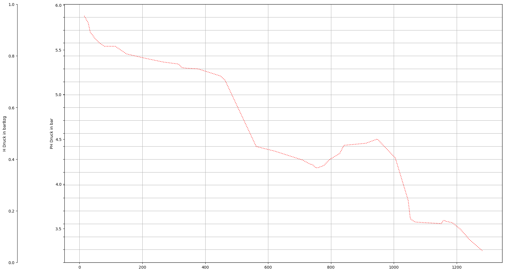

Tutorial 72: WORK IN PROGRESS: Longitudinal Sections
This example demonstrates how to …
SIR 3S Installation
[1]:
SIR3S_SIRGRAF_DIR = r"C:\3S\SIR 3S\SirGraf-90-15-00-20x64_Quebec-Upd1" #change to local path
Imports
[2]:
from sir3stoolkit.core import wrapper
[3]:
from sir3stoolkit.mantle import mantle
The wrapper package has to be initialized with reference to a SIR 3S (SirGraf) installation.
[4]:
wrapper.Initialize_Toolkit(SIR3S_SIRGRAF_DIR)
Additional imports
[5]:
import os
…
Initialization
[6]:
s3s = mantle.SIR3S_Model_Mantle()
Initialization complete
Open Model
[7]:
dbFilePath=r"C:\Users\aUsername\3S\PT3S\PT3S\Examples\Example3.db3"
[8]:
s3s.OpenModel(dbName=dbFilePath,
providerType=s3s.ProviderTypes.SQLite,
Mid="M-1-0-1",
saveCurrentlyOpenModel=False,
namedInstance="",
userID="",
password="")
Model is open for further operation
Get Data
[ ]:
dfs = s3s.generate_longitudinal_section_dataframes()
[2026-01-02 11:00:24,067] INFO in sir3stoolkit.mantle.dataframes: [metadata] Generating metadata dataframe for element type: ObjectTypes.AGSN_HydraulicProfile
[2026-01-02 11:00:24,067] INFO in sir3stoolkit.mantle.dataframes: [metadata] Retrieved 3 element(s) of element type ObjectTypes.AGSN_HydraulicProfile.
[2026-01-02 11:00:24,070] INFO in sir3stoolkit.mantle.dataframes: [Resolving Metadata Properties] No properties given → using ALL metadata properties for ObjectTypes.AGSN_HydraulicProfile.
[2026-01-02 11:00:24,071] INFO in sir3stoolkit.mantle.dataframes: [Resolving Metadata Properties] Using 9 metadata properties.
[2026-01-02 11:00:24,071] INFO in sir3stoolkit.mantle.dataframes: [metadata] Retrieving metadata properties ['Name', 'Lfdnr', 'Aktiv', 'AllNodesAndLinks', 'ObjsString', 'MainWay', 'Tk', 'Pk', 'InVariant']...
[2026-01-02 11:00:24,076] INFO in sir3stoolkit.mantle.dataframes: [metadata] Done. Shape: (3, 10)
[2026-01-02 11:00:24,078] INFO in sir3stoolkit.mantle.dataframes: Retrieving Hydraulic Profile with Lfdnr: 1.
[2026-01-02 11:00:24,079] INFO in sir3stoolkit.mantle.dataframes: [generate_element_dataframe] Generating df for element type: ObjectTypes.Pipe ...
[2026-01-02 11:00:24,079] DEBUG in sir3stoolkit.mantle.dataframes: [generate_element_dataframe] Generating df_metadata for element type: ObjectTypes.Pipe ...
[2026-01-02 11:00:24,082] INFO in sir3stoolkit.mantle.dataframes: [metadata] Generating metadata dataframe for element type: ObjectTypes.Pipe
[2026-01-02 11:00:24,084] INFO in sir3stoolkit.mantle.dataframes: [Resolving tks] Retrieved 524 element(s) of element type ObjectTypes.Pipe.
[2026-01-02 11:00:24,084] INFO in sir3stoolkit.mantle.dataframes: [Resolving tks] 44 tks remain after filtering for given tks.
[2026-01-02 11:00:24,084] INFO in sir3stoolkit.mantle.dataframes: [Resolving Metadata Properties] No properties given → using ALL metadata properties for ObjectTypes.Pipe.
[2026-01-02 11:00:24,084] INFO in sir3stoolkit.mantle.dataframes: [Resolving Metadata Properties] Using 46 metadata properties.
[2026-01-02 11:00:24,088] INFO in sir3stoolkit.mantle.dataframes: [metadata] Retrieving metadata properties ['Name', 'FkdtroRowd', 'Fkltgr', 'Fkstrasse', 'L', 'Lzu', 'Rau', 'Jlambs', 'Lambda0', 'Zein', 'Zaus', 'Zuml', 'Asoll', 'Indschall', 'Baujahr', 'Hal', 'Fkcont', 'Fk2lrohr', 'Beschreibung', 'Idreferenz', 'Iplanung', 'Kvr', 'LineWidthMM', 'DottedLine', 'DN', 'Di', 'KvrKlartext', 'HasClosedNSCHs', 'Tk', 'Pk', 'InVariant', 'Xkor', 'Ykor', 'GeometriesDiffer', 'bz.Fk', 'bz.Qsvb', 'bz.Irtrenn', 'bz.Leckstatus', 'bz.Leckstart', 'bz.Leckend', 'bz.Leckort', 'bz.Leckmenge', 'bz.Imptnz', 'bz.Zvlimptnz', 'bz.Kantenzv', 'bz.ITrennWithNSCH'], geometry, end nodes...
[2026-01-02 11:00:24,446] INFO in sir3stoolkit.mantle.dataframes: [metadata] 2 non-empty end node columns were created.
[2026-01-02 11:00:24,465] INFO in sir3stoolkit.mantle.dataframes: [metadata] Transforming DataFrame to GeoDataFrame successful with EPSG: 25832
[2026-01-02 11:00:24,465] INFO in sir3stoolkit.mantle.dataframes: [metadata] Done. Shape: (44, 50)
[2026-01-02 11:00:24,465] DEBUG in sir3stoolkit.mantle.dataframes: [generate_element_dataframe] Generating df_results for element type: ObjectTypes.Pipe ...
[2026-01-02 11:00:24,531] INFO in sir3stoolkit.mantle.dataframes: [results] Generating results dataframe for element type: ObjectTypes.Pipe
[2026-01-02 11:00:24,603] INFO in sir3stoolkit.mantle.dataframes: [Resolving Timestamps] Only static timestamp 2023-02-13 00:00:00.000 +01:00 is used
[2026-01-02 11:00:24,604] INFO in sir3stoolkit.mantle.dataframes: [Resolving Timestamps] 1 valid timestamp(s) will be used.
[2026-01-02 11:00:24,604] INFO in sir3stoolkit.mantle.dataframes: [Resolving tks] Retrieved 524 element(s) of element type ObjectTypes.Pipe.
[2026-01-02 11:00:24,606] INFO in sir3stoolkit.mantle.dataframes: [Resolving tks] 44 tks remain after filtering for given tks.
[2026-01-02 11:00:24,607] INFO in sir3stoolkit.mantle.dataframes: [results] Using 31 result properties.
[2026-01-02 11:00:24,613] INFO in sir3stoolkit.mantle.dataframes: [results] Retrieving result values...
[2026-01-02 11:00:24,913] INFO in sir3stoolkit.mantle.dataframes: [results] Done. Shape: (1, 1364)
[2026-01-02 11:00:24,913] DEBUG in sir3stoolkit.mantle.dataframes: [generate_element_dataframe] Merging df_metadata with df_results for element type: ObjectTypes.Pipe ...
[2026-01-02 11:00:24,934] INFO in sir3stoolkit.mantle.dataframes: [generate_element_dataframe] Generating df for element type: ObjectTypes.Pipe ...
[2026-01-02 11:00:24,934] DEBUG in sir3stoolkit.mantle.dataframes: [generate_element_dataframe] Generating df_metadata for element type: ObjectTypes.Pipe ...
[2026-01-02 11:00:24,934] INFO in sir3stoolkit.mantle.dataframes: [metadata] Generating metadata dataframe for element type: ObjectTypes.Pipe
[2026-01-02 11:00:24,939] INFO in sir3stoolkit.mantle.dataframes: [Resolving tks] Retrieved 524 element(s) of element type ObjectTypes.Pipe.
[2026-01-02 11:00:24,939] INFO in sir3stoolkit.mantle.dataframes: [Resolving tks] 44 tks remain after filtering for given tks.
[2026-01-02 11:00:24,941] INFO in sir3stoolkit.mantle.dataframes: [Resolving Metadata Properties] No properties given → using ALL metadata properties for ObjectTypes.Pipe.
[2026-01-02 11:00:24,941] INFO in sir3stoolkit.mantle.dataframes: [Resolving Metadata Properties] Using 46 metadata properties.
[2026-01-02 11:00:24,941] INFO in sir3stoolkit.mantle.dataframes: [metadata] Retrieving metadata properties ['Name', 'FkdtroRowd', 'Fkltgr', 'Fkstrasse', 'L', 'Lzu', 'Rau', 'Jlambs', 'Lambda0', 'Zein', 'Zaus', 'Zuml', 'Asoll', 'Indschall', 'Baujahr', 'Hal', 'Fkcont', 'Fk2lrohr', 'Beschreibung', 'Idreferenz', 'Iplanung', 'Kvr', 'LineWidthMM', 'DottedLine', 'DN', 'Di', 'KvrKlartext', 'HasClosedNSCHs', 'Tk', 'Pk', 'InVariant', 'Xkor', 'Ykor', 'GeometriesDiffer', 'bz.Fk', 'bz.Qsvb', 'bz.Irtrenn', 'bz.Leckstatus', 'bz.Leckstart', 'bz.Leckend', 'bz.Leckort', 'bz.Leckmenge', 'bz.Imptnz', 'bz.Zvlimptnz', 'bz.Kantenzv', 'bz.ITrennWithNSCH'], geometry, end nodes...
[2026-01-02 11:00:25,049] INFO in sir3stoolkit.mantle.dataframes: [metadata] 2 non-empty end node columns were created.
[2026-01-02 11:00:25,065] INFO in sir3stoolkit.mantle.dataframes: [metadata] Transforming DataFrame to GeoDataFrame successful with EPSG: 25832
[2026-01-02 11:00:25,065] INFO in sir3stoolkit.mantle.dataframes: [metadata] Done. Shape: (44, 50)
[2026-01-02 11:00:25,065] DEBUG in sir3stoolkit.mantle.dataframes: [generate_element_dataframe] Generating df_results for element type: ObjectTypes.Pipe ...
[2026-01-02 11:00:25,129] INFO in sir3stoolkit.mantle.dataframes: [results] Generating results dataframe for element type: ObjectTypes.Pipe
[2026-01-02 11:00:25,199] INFO in sir3stoolkit.mantle.dataframes: [Resolving Timestamps] Only static timestamp 2023-02-13 00:00:00.000 +01:00 is used
[2026-01-02 11:00:25,199] INFO in sir3stoolkit.mantle.dataframes: [Resolving Timestamps] 1 valid timestamp(s) will be used.
[2026-01-02 11:00:25,203] INFO in sir3stoolkit.mantle.dataframes: [Resolving tks] Retrieved 524 element(s) of element type ObjectTypes.Pipe.
[2026-01-02 11:00:25,203] INFO in sir3stoolkit.mantle.dataframes: [Resolving tks] 44 tks remain after filtering for given tks.
[2026-01-02 11:00:25,205] INFO in sir3stoolkit.mantle.dataframes: [results] Using 31 result properties.
[2026-01-02 11:00:25,215] INFO in sir3stoolkit.mantle.dataframes: [results] Retrieving result values...
[2026-01-02 11:00:25,563] INFO in sir3stoolkit.mantle.dataframes: [results] Done. Shape: (1, 1364)
[2026-01-02 11:00:25,563] DEBUG in sir3stoolkit.mantle.dataframes: [generate_element_dataframe] Merging df_metadata with df_results for element type: ObjectTypes.Pipe ...
[2026-01-02 11:00:25,574] INFO in sir3stoolkit.mantle.dataframes: Retrieving Hydraulic Profile with Lfdnr: 2.
[2026-01-02 11:00:25,574] INFO in sir3stoolkit.mantle.dataframes: [generate_element_dataframe] Generating df for element type: ObjectTypes.Pipe ...
[2026-01-02 11:00:25,578] DEBUG in sir3stoolkit.mantle.dataframes: [generate_element_dataframe] Generating df_metadata for element type: ObjectTypes.Pipe ...
[2026-01-02 11:00:25,579] INFO in sir3stoolkit.mantle.dataframes: [metadata] Generating metadata dataframe for element type: ObjectTypes.Pipe
[2026-01-02 11:00:25,582] INFO in sir3stoolkit.mantle.dataframes: [Resolving tks] Retrieved 524 element(s) of element type ObjectTypes.Pipe.
[2026-01-02 11:00:25,582] INFO in sir3stoolkit.mantle.dataframes: [Resolving tks] 44 tks remain after filtering for given tks.
[2026-01-02 11:00:25,584] INFO in sir3stoolkit.mantle.dataframes: [Resolving Metadata Properties] No properties given → using ALL metadata properties for ObjectTypes.Pipe.
[2026-01-02 11:00:25,585] INFO in sir3stoolkit.mantle.dataframes: [Resolving Metadata Properties] Using 46 metadata properties.
[2026-01-02 11:00:25,586] INFO in sir3stoolkit.mantle.dataframes: [metadata] Retrieving metadata properties ['Name', 'FkdtroRowd', 'Fkltgr', 'Fkstrasse', 'L', 'Lzu', 'Rau', 'Jlambs', 'Lambda0', 'Zein', 'Zaus', 'Zuml', 'Asoll', 'Indschall', 'Baujahr', 'Hal', 'Fkcont', 'Fk2lrohr', 'Beschreibung', 'Idreferenz', 'Iplanung', 'Kvr', 'LineWidthMM', 'DottedLine', 'DN', 'Di', 'KvrKlartext', 'HasClosedNSCHs', 'Tk', 'Pk', 'InVariant', 'Xkor', 'Ykor', 'GeometriesDiffer', 'bz.Fk', 'bz.Qsvb', 'bz.Irtrenn', 'bz.Leckstatus', 'bz.Leckstart', 'bz.Leckend', 'bz.Leckort', 'bz.Leckmenge', 'bz.Imptnz', 'bz.Zvlimptnz', 'bz.Kantenzv', 'bz.ITrennWithNSCH'], geometry, end nodes...
[2026-01-02 11:00:25,696] INFO in sir3stoolkit.mantle.dataframes: [metadata] 2 non-empty end node columns were created.
[2026-01-02 11:00:25,704] INFO in sir3stoolkit.mantle.dataframes: [metadata] Transforming DataFrame to GeoDataFrame successful with EPSG: 25832
[2026-01-02 11:00:25,704] INFO in sir3stoolkit.mantle.dataframes: [metadata] Done. Shape: (44, 50)
[2026-01-02 11:00:25,704] DEBUG in sir3stoolkit.mantle.dataframes: [generate_element_dataframe] Generating df_results for element type: ObjectTypes.Pipe ...
[2026-01-02 11:00:25,765] INFO in sir3stoolkit.mantle.dataframes: [results] Generating results dataframe for element type: ObjectTypes.Pipe
[2026-01-02 11:00:25,830] INFO in sir3stoolkit.mantle.dataframes: [Resolving Timestamps] Only static timestamp 2023-02-13 00:00:00.000 +01:00 is used
[2026-01-02 11:00:25,830] INFO in sir3stoolkit.mantle.dataframes: [Resolving Timestamps] 1 valid timestamp(s) will be used.
[2026-01-02 11:00:25,833] INFO in sir3stoolkit.mantle.dataframes: [Resolving tks] Retrieved 524 element(s) of element type ObjectTypes.Pipe.
[2026-01-02 11:00:25,834] INFO in sir3stoolkit.mantle.dataframes: [Resolving tks] 44 tks remain after filtering for given tks.
[2026-01-02 11:00:25,835] INFO in sir3stoolkit.mantle.dataframes: [results] Using 31 result properties.
[2026-01-02 11:00:25,856] INFO in sir3stoolkit.mantle.dataframes: [results] Retrieving result values...
[2026-01-02 11:00:26,163] INFO in sir3stoolkit.mantle.dataframes: [results] Done. Shape: (1, 1364)
[2026-01-02 11:00:26,163] DEBUG in sir3stoolkit.mantle.dataframes: [generate_element_dataframe] Merging df_metadata with df_results for element type: ObjectTypes.Pipe ...
[2026-01-02 11:00:26,174] INFO in sir3stoolkit.mantle.dataframes: [generate_element_dataframe] Generating df for element type: ObjectTypes.Pipe ...
[2026-01-02 11:00:26,174] DEBUG in sir3stoolkit.mantle.dataframes: [generate_element_dataframe] Generating df_metadata for element type: ObjectTypes.Pipe ...
[2026-01-02 11:00:26,174] INFO in sir3stoolkit.mantle.dataframes: [metadata] Generating metadata dataframe for element type: ObjectTypes.Pipe
[2026-01-02 11:00:26,179] INFO in sir3stoolkit.mantle.dataframes: [Resolving tks] Retrieved 524 element(s) of element type ObjectTypes.Pipe.
[2026-01-02 11:00:26,181] INFO in sir3stoolkit.mantle.dataframes: [Resolving tks] 44 tks remain after filtering for given tks.
[2026-01-02 11:00:26,181] INFO in sir3stoolkit.mantle.dataframes: [Resolving Metadata Properties] No properties given → using ALL metadata properties for ObjectTypes.Pipe.
[2026-01-02 11:00:26,184] INFO in sir3stoolkit.mantle.dataframes: [Resolving Metadata Properties] Using 46 metadata properties.
[2026-01-02 11:00:26,184] INFO in sir3stoolkit.mantle.dataframes: [metadata] Retrieving metadata properties ['Name', 'FkdtroRowd', 'Fkltgr', 'Fkstrasse', 'L', 'Lzu', 'Rau', 'Jlambs', 'Lambda0', 'Zein', 'Zaus', 'Zuml', 'Asoll', 'Indschall', 'Baujahr', 'Hal', 'Fkcont', 'Fk2lrohr', 'Beschreibung', 'Idreferenz', 'Iplanung', 'Kvr', 'LineWidthMM', 'DottedLine', 'DN', 'Di', 'KvrKlartext', 'HasClosedNSCHs', 'Tk', 'Pk', 'InVariant', 'Xkor', 'Ykor', 'GeometriesDiffer', 'bz.Fk', 'bz.Qsvb', 'bz.Irtrenn', 'bz.Leckstatus', 'bz.Leckstart', 'bz.Leckend', 'bz.Leckort', 'bz.Leckmenge', 'bz.Imptnz', 'bz.Zvlimptnz', 'bz.Kantenzv', 'bz.ITrennWithNSCH'], geometry, end nodes...
[2026-01-02 11:00:26,280] INFO in sir3stoolkit.mantle.dataframes: [metadata] 2 non-empty end node columns were created.
[2026-01-02 11:00:26,296] INFO in sir3stoolkit.mantle.dataframes: [metadata] Transforming DataFrame to GeoDataFrame successful with EPSG: 25832
[2026-01-02 11:00:26,296] INFO in sir3stoolkit.mantle.dataframes: [metadata] Done. Shape: (44, 50)
[2026-01-02 11:00:26,298] DEBUG in sir3stoolkit.mantle.dataframes: [generate_element_dataframe] Generating df_results for element type: ObjectTypes.Pipe ...
[2026-01-02 11:00:26,346] INFO in sir3stoolkit.mantle.dataframes: [results] Generating results dataframe for element type: ObjectTypes.Pipe
[2026-01-02 11:00:26,414] INFO in sir3stoolkit.mantle.dataframes: [Resolving Timestamps] Only static timestamp 2023-02-13 00:00:00.000 +01:00 is used
[2026-01-02 11:00:26,414] INFO in sir3stoolkit.mantle.dataframes: [Resolving Timestamps] 1 valid timestamp(s) will be used.
[2026-01-02 11:00:26,419] INFO in sir3stoolkit.mantle.dataframes: [Resolving tks] Retrieved 524 element(s) of element type ObjectTypes.Pipe.
[2026-01-02 11:00:26,419] INFO in sir3stoolkit.mantle.dataframes: [Resolving tks] 44 tks remain after filtering for given tks.
[2026-01-02 11:00:26,420] INFO in sir3stoolkit.mantle.dataframes: [results] Using 31 result properties.
[2026-01-02 11:00:26,444] INFO in sir3stoolkit.mantle.dataframes: [results] Retrieving result values...
[2026-01-02 11:00:26,735] INFO in sir3stoolkit.mantle.dataframes: [results] Done. Shape: (1, 1364)
[2026-01-02 11:00:26,735] DEBUG in sir3stoolkit.mantle.dataframes: [generate_element_dataframe] Merging df_metadata with df_results for element type: ObjectTypes.Pipe ...
[2026-01-02 11:00:26,748] INFO in sir3stoolkit.mantle.dataframes: Retrieving Hydraulic Profile with Lfdnr: 3.
[2026-01-02 11:00:26,748] INFO in sir3stoolkit.mantle.dataframes: [generate_element_dataframe] Generating df for element type: ObjectTypes.Pipe ...
[2026-01-02 11:00:26,748] DEBUG in sir3stoolkit.mantle.dataframes: [generate_element_dataframe] Generating df_metadata for element type: ObjectTypes.Pipe ...
[2026-01-02 11:00:26,748] INFO in sir3stoolkit.mantle.dataframes: [metadata] Generating metadata dataframe for element type: ObjectTypes.Pipe
[2026-01-02 11:00:26,752] INFO in sir3stoolkit.mantle.dataframes: [Resolving tks] Retrieved 524 element(s) of element type ObjectTypes.Pipe.
[2026-01-02 11:00:26,753] INFO in sir3stoolkit.mantle.dataframes: [Resolving tks] 44 tks remain after filtering for given tks.
[2026-01-02 11:00:26,753] INFO in sir3stoolkit.mantle.dataframes: [Resolving Metadata Properties] No properties given → using ALL metadata properties for ObjectTypes.Pipe.
[2026-01-02 11:00:26,755] INFO in sir3stoolkit.mantle.dataframes: [Resolving Metadata Properties] Using 46 metadata properties.
[2026-01-02 11:00:26,755] INFO in sir3stoolkit.mantle.dataframes: [metadata] Retrieving metadata properties ['Name', 'FkdtroRowd', 'Fkltgr', 'Fkstrasse', 'L', 'Lzu', 'Rau', 'Jlambs', 'Lambda0', 'Zein', 'Zaus', 'Zuml', 'Asoll', 'Indschall', 'Baujahr', 'Hal', 'Fkcont', 'Fk2lrohr', 'Beschreibung', 'Idreferenz', 'Iplanung', 'Kvr', 'LineWidthMM', 'DottedLine', 'DN', 'Di', 'KvrKlartext', 'HasClosedNSCHs', 'Tk', 'Pk', 'InVariant', 'Xkor', 'Ykor', 'GeometriesDiffer', 'bz.Fk', 'bz.Qsvb', 'bz.Irtrenn', 'bz.Leckstatus', 'bz.Leckstart', 'bz.Leckend', 'bz.Leckort', 'bz.Leckmenge', 'bz.Imptnz', 'bz.Zvlimptnz', 'bz.Kantenzv', 'bz.ITrennWithNSCH'], geometry, end nodes...
[2026-01-02 11:00:26,862] INFO in sir3stoolkit.mantle.dataframes: [metadata] 2 non-empty end node columns were created.
[2026-01-02 11:00:26,871] INFO in sir3stoolkit.mantle.dataframes: [metadata] Transforming DataFrame to GeoDataFrame successful with EPSG: 25832
[2026-01-02 11:00:26,871] INFO in sir3stoolkit.mantle.dataframes: [metadata] Done. Shape: (44, 50)
[2026-01-02 11:00:26,871] DEBUG in sir3stoolkit.mantle.dataframes: [generate_element_dataframe] Generating df_results for element type: ObjectTypes.Pipe ...
[2026-01-02 11:00:26,935] INFO in sir3stoolkit.mantle.dataframes: [results] Generating results dataframe for element type: ObjectTypes.Pipe
[2026-01-02 11:00:26,996] INFO in sir3stoolkit.mantle.dataframes: [Resolving Timestamps] Only static timestamp 2023-02-13 00:00:00.000 +01:00 is used
[2026-01-02 11:00:26,996] INFO in sir3stoolkit.mantle.dataframes: [Resolving Timestamps] 1 valid timestamp(s) will be used.
[2026-01-02 11:00:26,996] INFO in sir3stoolkit.mantle.dataframes: [Resolving tks] Retrieved 524 element(s) of element type ObjectTypes.Pipe.
[2026-01-02 11:00:27,001] INFO in sir3stoolkit.mantle.dataframes: [Resolving tks] 44 tks remain after filtering for given tks.
[2026-01-02 11:00:27,002] INFO in sir3stoolkit.mantle.dataframes: [results] Using 31 result properties.
[2026-01-02 11:00:27,014] INFO in sir3stoolkit.mantle.dataframes: [results] Retrieving result values...
[2026-01-02 11:00:27,335] INFO in sir3stoolkit.mantle.dataframes: [results] Done. Shape: (1, 1364)
[2026-01-02 11:00:27,335] DEBUG in sir3stoolkit.mantle.dataframes: [generate_element_dataframe] Merging df_metadata with df_results for element type: ObjectTypes.Pipe ...
[2026-01-02 11:00:27,347] INFO in sir3stoolkit.mantle.dataframes: [generate_element_dataframe] Generating df for element type: ObjectTypes.Pipe ...
[2026-01-02 11:00:27,347] DEBUG in sir3stoolkit.mantle.dataframes: [generate_element_dataframe] Generating df_metadata for element type: ObjectTypes.Pipe ...
[2026-01-02 11:00:27,347] INFO in sir3stoolkit.mantle.dataframes: [metadata] Generating metadata dataframe for element type: ObjectTypes.Pipe
[2026-01-02 11:00:27,347] INFO in sir3stoolkit.mantle.dataframes: [Resolving tks] Retrieved 524 element(s) of element type ObjectTypes.Pipe.
[2026-01-02 11:00:27,351] INFO in sir3stoolkit.mantle.dataframes: [Resolving tks] 44 tks remain after filtering for given tks.
[2026-01-02 11:00:27,351] INFO in sir3stoolkit.mantle.dataframes: [Resolving Metadata Properties] No properties given → using ALL metadata properties for ObjectTypes.Pipe.
[2026-01-02 11:00:27,354] INFO in sir3stoolkit.mantle.dataframes: [Resolving Metadata Properties] Using 46 metadata properties.
[2026-01-02 11:00:27,354] INFO in sir3stoolkit.mantle.dataframes: [metadata] Retrieving metadata properties ['Name', 'FkdtroRowd', 'Fkltgr', 'Fkstrasse', 'L', 'Lzu', 'Rau', 'Jlambs', 'Lambda0', 'Zein', 'Zaus', 'Zuml', 'Asoll', 'Indschall', 'Baujahr', 'Hal', 'Fkcont', 'Fk2lrohr', 'Beschreibung', 'Idreferenz', 'Iplanung', 'Kvr', 'LineWidthMM', 'DottedLine', 'DN', 'Di', 'KvrKlartext', 'HasClosedNSCHs', 'Tk', 'Pk', 'InVariant', 'Xkor', 'Ykor', 'GeometriesDiffer', 'bz.Fk', 'bz.Qsvb', 'bz.Irtrenn', 'bz.Leckstatus', 'bz.Leckstart', 'bz.Leckend', 'bz.Leckort', 'bz.Leckmenge', 'bz.Imptnz', 'bz.Zvlimptnz', 'bz.Kantenzv', 'bz.ITrennWithNSCH'], geometry, end nodes...
[2026-01-02 11:00:27,463] INFO in sir3stoolkit.mantle.dataframes: [metadata] 2 non-empty end node columns were created.
[2026-01-02 11:00:27,468] INFO in sir3stoolkit.mantle.dataframes: [metadata] Transforming DataFrame to GeoDataFrame successful with EPSG: 25832
[2026-01-02 11:00:27,468] INFO in sir3stoolkit.mantle.dataframes: [metadata] Done. Shape: (44, 50)
[2026-01-02 11:00:27,468] DEBUG in sir3stoolkit.mantle.dataframes: [generate_element_dataframe] Generating df_results for element type: ObjectTypes.Pipe ...
[2026-01-02 11:00:27,532] INFO in sir3stoolkit.mantle.dataframes: [results] Generating results dataframe for element type: ObjectTypes.Pipe
[2026-01-02 11:00:27,582] INFO in sir3stoolkit.mantle.dataframes: [Resolving Timestamps] Only static timestamp 2023-02-13 00:00:00.000 +01:00 is used
[2026-01-02 11:00:27,582] INFO in sir3stoolkit.mantle.dataframes: [Resolving Timestamps] 1 valid timestamp(s) will be used.
[2026-01-02 11:00:27,582] INFO in sir3stoolkit.mantle.dataframes: [Resolving tks] Retrieved 524 element(s) of element type ObjectTypes.Pipe.
[2026-01-02 11:00:27,591] INFO in sir3stoolkit.mantle.dataframes: [Resolving tks] 44 tks remain after filtering for given tks.
[2026-01-02 11:00:27,605] INFO in sir3stoolkit.mantle.dataframes: [results] Using 31 result properties.
[2026-01-02 11:00:27,615] INFO in sir3stoolkit.mantle.dataframes: [results] Retrieving result values...
[2026-01-02 11:00:27,916] INFO in sir3stoolkit.mantle.dataframes: [results] Done. Shape: (1, 1364)
[2026-01-02 11:00:27,916] DEBUG in sir3stoolkit.mantle.dataframes: [generate_element_dataframe] Merging df_metadata with df_results for element type: ObjectTypes.Pipe ...
[ ]:
df=dfs[0]
[ ]:
df_vec=s3s.add_interior_points_to_results_dataframe(df)
[ ]:
df_vec.head(3)
| tk | Name | FkdtroRowd | Fkltgr | Fkstrasse | L | Lzu | Rau | Jlambs | Lambda0 | Zein | Zaus | Zuml | Asoll | Indschall | Baujahr | Hal | Fkcont | Fk2lrohr | Beschreibung | Idreferenz | Iplanung | Kvr | LineWidthMM | DottedLine | DN | Di | KvrKlartext | HasClosedNSCHs | Tk | Pk | InVariant | Xkor | Ykor | GeometriesDiffer | bz.Fk | bz.Qsvb | bz.Irtrenn | bz.Leckstatus | bz.Leckstart | bz.Leckend | bz.Leckort | bz.Leckmenge | bz.Imptnz | bz.Zvlimptnz | bz.Kantenzv | bz.ITrennWithNSCH | geometry | fkKI | fkKK | A | DTTR | DWVERL | DWVERLABS | IAKTIV | IRTRENN | JV | MVEC | PDAMPF | PHR | PMIN | PVEC | PVECMAX_INST | PVECMIN_INST | QMAV | QMI | QMK | RHOI | RHOK | RHOVEC | SVEC | TI | TK | TTRVEC | TVEC | VAV | VI | VK | VOLDA | WVL | ZVEC | l_sum | AGSN_Lfdnr | AGSN_Name | |||||||||||||||||||||||||||||||||||||||||||||||||||||||||||||||||||||||||||||||||||||||||||
|---|---|---|---|---|---|---|---|---|---|---|---|---|---|---|---|---|---|---|---|---|---|---|---|---|---|---|---|---|---|---|---|---|---|---|---|---|---|---|---|---|---|---|---|---|---|---|---|---|---|---|---|---|---|---|---|---|---|---|---|---|---|---|---|---|---|---|---|---|---|---|---|---|---|---|---|---|---|---|---|---|---|---|---|---|---|---|---|---|---|---|---|---|---|---|---|---|---|---|---|---|---|---|---|---|---|---|---|---|---|---|---|---|---|---|---|---|---|---|---|---|---|---|---|---|---|---|---|---|---|---|---|---|---|---|---|---|---|---|---|---|---|---|---|---|---|---|---|---|---|---|---|---|---|---|---|---|---|---|---|---|---|---|---|---|---|---|---|---|---|---|---|---|---|---|
| interior points | -1 | -1 | -1 | -1 | -1 | -1 | -1 | -1 | -1 | -1 | -1 | -1 | -1 | -1 | -1 | -1 | -1 | -1 | -1 | -1 | -1 | -1 | -1 | -1 | -1 | -1 | -1 | -1 | -1 | -1 | -1 | -1 | -1 | -1 | -1 | -1 | -1 | -1 | -1 | -1 | -1 | -1 | -1 | -1 | -1 | -1 | -1 | -1 | -1 | -1 | -1 | -1 | -1 | -1 | -1 | -1 | -1 | 0 | 1 | 2 | 3 | 4 | 5 | 6 | 7 | 8 | 9 | 10 | -1 | -1 | -1 | 0 | 1 | 2 | 3 | 4 | 5 | 6 | 7 | 8 | 9 | 10 | 0 | 1 | 2 | 3 | 4 | 5 | 6 | 7 | 8 | 9 | 10 | 0 | 1 | 2 | 3 | 4 | 5 | 6 | 7 | 8 | 9 | 10 | -1 | -1 | -1 | -1 | -1 | 0 | 1 | 2 | 3 | 4 | 5 | 6 | 7 | 8 | 9 | 10 | 0 | 1 | 2 | 3 | 4 | 5 | 6 | 7 | 8 | 9 | 10 | -1 | -1 | 0 | 1 | 2 | 3 | 4 | 5 | 6 | 7 | 8 | 9 | 10 | 0 | 1 | 2 | 3 | 4 | 5 | 6 | 7 | 8 | 9 | 10 | -1 | -1 | -1 | -1 | -1 | 0 | 1 | 2 | 3 | 4 | 5 | 6 | 7 | 8 | 9 | 10 | -1 | -1 | -1 |
| 0 | 5691533564979419761 | Rohr V-E0 V-K1683S | 4816511167455310973 | 4779752876656844188 | 5204829332281547346 | 15,3517 | 0 | 0,05 | 1 | 0 | 0 | 0 | 0 | 1000 | 0 | 0 | 5029128874972463118 | 5025945677694931826 | OSM: Knoten 476971238 -> Knoten 299394923; Län... | 39785520 | 0 | 1 | 0,00499999987368938 | 0 | 350 | 345,6 | Vorlauf | 5691533564979419761 | 5691533564979419761 | False | 713619,921382501 | 5578218,95448989 | False | 5691533564979419761 | 0 | 0 | 0 | 0 | 0 | 0 | 0 | 0 | 0 | 0 | 0 | LINESTRING (713619.921 5578218.954, 713614.649... | 5398100694284104779 | 4825391580467484032 | 0.0 | 0.004844 | 43.12016 | 0.661968 | 0.0 | 0.0 | 0.152727 | 79.74764 | 79.74764 | 79.74764 | NaN | NaN | NaN | NaN | NaN | NaN | NaN | NaN | 0.701074 | 0.002345 | 5.800678 | 5.878785 | 5.839730 | 5.800680 | NaN | NaN | NaN | NaN | NaN | NaN | NaN | NaN | 5.878785 | 5.839730 | 5.800680 | NaN | NaN | NaN | NaN | NaN | NaN | NaN | NaN | 5.878785 | 5.839730 | 5.800680 | NaN | NaN | NaN | NaN | NaN | NaN | NaN | NaN | 287.0915 | 287.0915 | 287.0915 | 965.7 | 965.7012 | 965.7000 | 965.7006 | 965.7012 | NaN | NaN | NaN | NaN | NaN | NaN | NaN | NaN | 0 | 7.675850 | 15.35170 | NaN | NaN | NaN | NaN | NaN | NaN | NaN | NaN | 89.99999 | 89.99802 | 0.000000 | 0.002422 | 0.004844 | NaN | NaN | NaN | NaN | NaN | NaN | NaN | NaN | 90.00000 | 89.99902 | 89.99802 | NaN | NaN | NaN | NaN | NaN | NaN | NaN | NaN | 0.880315 | 0.880315 | 0.880314 | 0.0 | 10082.88 | 541.49 | 541.89 | 542.29 | NaN | NaN | NaN | NaN | NaN | NaN | NaN | NaN | 15.351701 | 1 | Längsschnitt | ||
| 1 | 5048873293262650113 | Rohr V-K1683S V-K1693S | 4816511167455310973 | 4779752876656844188 | 5204829332281547346 | 12,50895 | 0 | 0,05 | 1 | 0 | 0 | 0 | 0 | 1000 | 0 | 0 | 5029128874972463118 | 5216742060270992761 | OSM: Knoten 299394923 -> Knoten 4105649557; Lä... | 39785520 | 0 | 1 | 0,00499999987368938 | 0 | 350 | 345,6 | Vorlauf | 5048873293262650113 | 5048873293262650113 | False | 713614,648711719 | 5578233,37231421 | False | 5048873293262650113 | 0 | 0 | 0 | 0 | 0 | 0 | 0 | 0 | 0 | 0 | 0 | LINESTRING (713614.649 5578233.372, 713614.465... | 4825391580467484032 | 5180617780362861593 | 0.0 | 0.003947 | 43.5808 | 0.54515 | 0.0 | 0.0 | 0.152727 | 79.74764 | 79.74764 | 79.74764 | NaN | NaN | NaN | NaN | NaN | NaN | NaN | NaN | 0.701027 | 0.00191 | 5.732475 | 5.800680 | 5.766575 | 5.732475 | NaN | NaN | NaN | NaN | NaN | NaN | NaN | NaN | 5.800680 | 5.766575 | 5.732475 | NaN | NaN | NaN | NaN | NaN | NaN | NaN | NaN | 5.800680 | 5.766575 | 5.732475 | NaN | NaN | NaN | NaN | NaN | NaN | NaN | NaN | 287.0915 | 287.0915 | 287.0915 | 965.7012 | 965.7021 | 965.7012 | 965.7017 | 965.7021 | NaN | NaN | NaN | NaN | NaN | NaN | NaN | NaN | 0 | 6.254474 | 12.50895 | NaN | NaN | NaN | NaN | NaN | NaN | NaN | NaN | 89.99802 | 89.9964 | 0.004844 | 0.006818 | 0.008791 | NaN | NaN | NaN | NaN | NaN | NaN | NaN | NaN | 89.99802 | 89.99722 | 89.99640 | NaN | NaN | NaN | NaN | NaN | NaN | NaN | NaN | 0.880314 | 0.880314 | 0.880313 | 0.0 | 10081.81 | 542.29 | 542.64 | 542.99 | NaN | NaN | NaN | NaN | NaN | NaN | NaN | NaN | 27.860648 | 1 | Längsschnitt | ||
| 2 | 5715081934973525403 | Rohr V-K2163S V-K1693S | 4816511167455310973 | 4779752876656844188 | 5204829332281547346 | 6,265505 | 0 | 0,05 | 1 | 0 | 0 | 0 | 0 | 1000 | 0 | 0 | 5029128874972463118 | 4919359344392474301 | OSM: Knoten 299394922 -> Knoten 4105649557; Lä... | 595926249 | 0 | 1 | 0,00499999987368938 | 0 | 350 | 345,6 | Vorlauf | 5715081934973525403 | 5715081934973525403 | False | 713614,369043203 | 5578252,14468345 | False | 5715081934973525403 | 0 | 0 | 0 | 0 | 0 | 0 | 0 | 0 | 0 | 0 | 0 | LINESTRING (713614.369 5578252.145, 713614.465... | 4964920487041183545 | 5180617780362861593 | 0.0 | 0.001977 | 43.50407 | 0.272575 | 0.0 | 0.0 | 0.152727 | -79.74764 | -79.74764 | NaN | NaN | NaN | NaN | NaN | NaN | NaN | NaN | NaN | 0.700995 | 0.000957 | 5.699317 | 5.699315 | 5.732475 | NaN | NaN | NaN | NaN | NaN | NaN | NaN | NaN | NaN | 5.699315 | 5.732475 | NaN | NaN | NaN | NaN | NaN | NaN | NaN | NaN | NaN | 5.699315 | 5.732475 | NaN | NaN | NaN | NaN | NaN | NaN | NaN | NaN | NaN | -287.0915 | -287.0915 | -287.0915 | 965.7026 | 965.7021 | 965.7026 | 965.7021 | NaN | NaN | NaN | NaN | NaN | NaN | NaN | NaN | NaN | 0 | 6.265505 | NaN | NaN | NaN | NaN | NaN | NaN | NaN | NaN | NaN | 89.9956 | 89.9964 | 0.010768 | 0.008791 | NaN | NaN | NaN | NaN | NaN | NaN | NaN | NaN | NaN | 89.99561 | 89.99640 | NaN | NaN | NaN | NaN | NaN | NaN | NaN | NaN | NaN | -0.880313 | -0.880313 | -0.880313 | 0.0 | -10080.92 | 543.33 | 542.99 | NaN | NaN | NaN | NaN | NaN | NaN | NaN | NaN | NaN | 34.126153 | 1 | Längsschnitt | ||
[54]:
s3s.GetResultProperties_from_elementType(s3s.ObjectTypes.Pipe,False)
[54]:
['A',
'ACALC',
'CPI',
'CPK',
'DH',
'DP',
'DRAGRED',
'DRAKONZ',
'DSI',
'DSK',
'DTTR',
'DWVERL',
'DWVERLABS',
'ETAAV',
'FS',
'HR',
'HVEC',
'IAKTIV',
'IRTRENN',
'JV',
'JV2',
'LAMBDA',
'LECKEINAUS',
'LECKMENGE',
'LECKORT',
'LINEPACK',
'LINEPACKGEOM',
'LINEPACKRATE',
'MAINELEMENT',
'MAV',
'MI',
'MK',
'MKOND',
'MMAX_INST',
'MMIN_INST',
'MVEC',
'MVECMAX_INST',
'MVECMIN_INST',
'PAV',
'PDAMPF',
'PHR',
'PHVEC',
'PMAX',
'PMIN',
'PR',
'PVEC',
'PVECMAX_INST',
'PVECMIN_INST',
'QI2',
'QK2',
'QMAV',
'QMI',
'QMK',
'QMMAX_INST',
'QMMIN_INST',
'QMVEC',
'QSVB',
'RHOAV',
'RHOI',
'RHOK',
'RHOVEC',
'SVEC',
'TAV',
'TI',
'TK',
'TTRVEC',
'TVEC',
'TVECMAX_INST',
'TVECMIN_INST',
'VAV',
'VI',
'VK',
'VMAX_INST',
'VMIN_INST',
'VOLDA',
'WALTERI',
'WALTERK',
'WVL',
'ZAUS',
'ZEIN',
'ZHKNR',
'ZVEC']
Plot
[18]:
import matplotlib.pyplot as plt
[19]:
import pandas as pd
[20]:
def fyPH(ax,offset=0):
ax.spines["left"].set_position(("outward", offset))
ax.set_ylabel('PH Druck in bar')
#ax.set_ylim(1,6)
#ax.set_yticks(sorted(np.append(np.linspace(1,6,11),[])))
ax.yaxis.set_ticks_position('left')
ax.yaxis.set_label_position('left')
def fymlc(ax,offset=60):
ax.spines["left"].set_position(("outward", offset))
ax.set_ylabel('mlc Druckhöhe in mlc')
#ax.set_ylim(1,6)
#ax.set_yticks(sorted(np.append(np.linspace(1,6,11),[])))
ax.yaxis.set_ticks_position('left')
ax.yaxis.set_label_position('left')
def fybarBzg(ax,offset=120):
ax.spines["left"].set_position(("outward", offset))
ax.set_ylabel('H Druck in barBzg')
#ax.set_ylim(1,6)
#ax.set_yticks(sorted(np.append(np.linspace(1,6,11),[])))
ax.yaxis.set_ticks_position('left')
ax.yaxis.set_label_position('left')
"""def fyM(ax,offset=180):
Rm.pltLDSHelperY(ax)
ax.spines["left"].set_position(("outward",offset))
ax.set_ylabel('QM Massenstrom in t/h')
#ax.set_ylim(500,550)
#ax.set_yticks(sorted(np.append(np.linspace(500,550,11),[])))
ax.yaxis.set_ticks_position('left')
ax.yaxis.set_label_position('left')
def fyT(ax,offset=240):
Rm.pltLDSHelperY(ax)
ax.spines["left"].set_position(("outward",offset))
ax.set_ylabel('T Tempertatur in °C')
ax.set_ylim(55,95)
#ax.set_yticks(sorted(np.append(np.linspace(0,95,11),[])))
ax.yaxis.set_ticks_position('left')
ax.yaxis.set_label_position('left')"""
[20]:
'def fyM(ax,offset=180):\n Rm.pltLDSHelperY(ax)\n ax.spines["left"].set_position(("outward",offset))\n ax.set_ylabel(\'QM Massenstrom in t/h\')\n #ax.set_ylim(500,550)\n #ax.set_yticks(sorted(np.append(np.linspace(500,550,11),[])))\n ax.yaxis.set_ticks_position(\'left\')\n ax.yaxis.set_label_position(\'left\')\n\ndef fyT(ax,offset=240):\n Rm.pltLDSHelperY(ax)\n ax.spines["left"].set_position(("outward",offset))\n ax.set_ylabel(\'T Tempertatur in °C\')\n ax.set_ylim(55,95)\n #ax.set_yticks(sorted(np.append(np.linspace(0,95,11),[])))\n ax.yaxis.set_ticks_position(\'left\')\n ax.yaxis.set_label_position(\'left\')'
[38]:
import numpy as np
[ ]:
def plot(dfAGSN=pd.DataFrame()
,dfAGSNRL=pd.DataFrame()
,PHCol='("PVEC", "0")'
,mlcCol='mlc_n'
,zKoorCol='ZKOR_n'
,barBzgCol='H_n'
,QMCol='QM'
,TCol='T_n'
,xCol='LSum'
):
fig, ax0 = plt.subplots(figsize=(20,11.9))
ax0.set_yticks(np.linspace(0, 10, 21))
ax0.yaxis.set_ticklabels([])
ax0.grid()
#PH
ax1 = ax0.twinx()
fyPH(ax1)
PH_SL=ax1.plot(dfAGSN[xCol], dfAGSN[PHCol], color='red', label='PH SL',ls='dotted')
PH_RL=ax1.plot(dfAGSNRL[xCol], dfAGSNRL[PHCol], color='blue', label='PH RL',ls='dotted')
#mlc
ax11 = ax0.twinx()
fymlc(ax11)
mlc_SL=ax11.plot(dfAGSN[xCol], dfAGSN[mlcCol], color='red', label='mlc SL')
mlc_RL=ax11.plot(dfAGSNRL[xCol], dfAGSNRL[mlcCol], color='blue', label='mlc RL')
z=ax11.plot(dfAGSN[xCol], dfAGSN[zKoorCol], color='black', label='z',ls='dashed',alpha=.5)
#barBZG
ax12 = ax0.twinx()
fybarBzg(ax12)
barB_SL=ax12.plot(dfAGSN[xCol], dfAGSN[barBzgCol], color='red', label='H SL',ls='dashdot')
barB_RL=ax12.plot(dfAGSNRL[xCol], dfAGSNRL[barBzgCol], color='blue', label='H RL',ls='dashdot')
"""
#M
ax2 = ax0.twinx()
fyM(ax2)
QM_SL=ax2.step(dfAGSN[xCol], dfAGSN[QMCol]*dfAGSN['direction'], color='orange', label='M SL')
QM_RL=ax2.step(dfAGSNRL[xCol], dfAGSNRL[QMCol]*dfAGSNRL['direction'], color='cyan', label='M RL',ls='--')
#T
ax3 = ax0.twinx()
fyT(ax3)
T_SL=ax3.plot(dfAGSN[xCol], dfAGSN[TCol], color='pink', label='T SL')
T_RL=ax3.plot(dfAGSNRL[xCol], dfAGSNRL[TCol], color='lavender', label='T RL')
"""
ax0.set_title('Longitudinal Section for ')#+dbFilename)
# added these three lines
lns = PH_SL+ PH_RL + mlc_SL+ mlc_RL + barB_SL+ barB_RL#+ QM_SL+ QM_RL + T_SL+ T_RL + z
labs = [l.get_label() for l in lns]
ax0.legend(lns, labs)#, loc=0)
plt.show()
[55]:
def plot(
dfAGSN=df_vec,
xCol="l_sum",
PHCol=("PVEC", 0),
barBzgCol=("HVEC", 0)
):
fig, ax0 = plt.subplots(figsize=(20,11.9))
ax0.set_yticks(np.linspace(0, 10, 21))
ax0.yaxis.set_ticklabels([])
ax0.grid()
#PH
ax1 = ax0.twinx()
fyPH(ax1)
PH_SL=ax1.plot(dfAGSN[xCol], dfAGSN[PHCol], color='red', label='PH SL',ls='dotted')
#PH_RL=ax1.plot(dfAGSNRL[xCol], dfAGSNRL[PHCol], color='blue', label='PH RL',ls='dotted')
#barBZG
ax12 = ax0.twinx()
fybarBzg(ax12)
barB_SL=ax12.plot(dfAGSN[xCol], dfAGSN[barBzgCol], color='red', label='H SL',ls='dashdot')
ax0.set_title('Longitudinal Section for ')#+dbFilename)
# added these three lines
lns = PH_SL + barB_SL#+ PH_RL + mlc_SL+ mlc_RL + barB_SL+ barB_RL#+ QM_SL+ QM_RL + T_SL+ T_RL + z
labs = [l.get_label() for l in lns]
ax0.legend(lns, labs)#, loc=0)
plt.show()
[56]:
plot(df_vec)
---------------------------------------------------------------------------
KeyError Traceback (most recent call last)
File c:\Users\jablonski\AppData\Local\anaconda3\Lib\site-packages\pandas\core\indexes\base.py:3805, in Index.get_loc(self, key)
3804 try:
-> 3805 return self._engine.get_loc(casted_key)
3806 except KeyError as err:
File index.pyx:167, in pandas._libs.index.IndexEngine.get_loc()
File index.pyx:196, in pandas._libs.index.IndexEngine.get_loc()
File pandas\\_libs\\hashtable_class_helper.pxi:7081, in pandas._libs.hashtable.PyObjectHashTable.get_item()
File pandas\\_libs\\hashtable_class_helper.pxi:7089, in pandas._libs.hashtable.PyObjectHashTable.get_item()
KeyError: 'HVEC'
The above exception was the direct cause of the following exception:
KeyError Traceback (most recent call last)
File index.pyx:768, in pandas._libs.index.BaseMultiIndexCodesEngine.get_loc()
File c:\Users\jablonski\AppData\Local\anaconda3\Lib\site-packages\pandas\core\indexes\base.py:3812, in Index.get_loc(self, key)
3811 raise InvalidIndexError(key)
-> 3812 raise KeyError(key) from err
3813 except TypeError:
3814 # If we have a listlike key, _check_indexing_error will raise
3815 # InvalidIndexError. Otherwise we fall through and re-raise
3816 # the TypeError.
KeyError: 'HVEC'
During handling of the above exception, another exception occurred:
KeyError Traceback (most recent call last)
File c:\Users\jablonski\AppData\Local\anaconda3\Lib\site-packages\pandas\core\indexes\multi.py:3053, in MultiIndex.get_loc(self, key)
3052 try:
-> 3053 return self._engine.get_loc(key)
3054 except KeyError as err:
File index.pyx:771, in pandas._libs.index.BaseMultiIndexCodesEngine.get_loc()
KeyError: ('HVEC', 0)
The above exception was the direct cause of the following exception:
KeyError Traceback (most recent call last)
Cell In[56], line 1
----> 1 plot(df_vec)
Cell In[55], line 22, in plot(dfAGSN, xCol, PHCol, barBzgCol)
20 ax12 = ax0.twinx()
21 fybarBzg(ax12)
---> 22 barB_SL=ax12.plot(dfAGSN[xCol], dfAGSN[barBzgCol], color='red', label='H SL',ls='dashdot')
24 ax0.set_title('Longitudinal Section for ')#+dbFilename)
26 # added these three lines
File c:\Users\jablonski\AppData\Local\anaconda3\Lib\site-packages\pandas\core\frame.py:4101, in DataFrame.__getitem__(self, key)
4099 if is_single_key:
4100 if self.columns.nlevels > 1:
-> 4101 return self._getitem_multilevel(key)
4102 indexer = self.columns.get_loc(key)
4103 if is_integer(indexer):
File c:\Users\jablonski\AppData\Local\anaconda3\Lib\site-packages\pandas\core\frame.py:4159, in DataFrame._getitem_multilevel(self, key)
4157 def _getitem_multilevel(self, key):
4158 # self.columns is a MultiIndex
-> 4159 loc = self.columns.get_loc(key)
4160 if isinstance(loc, (slice, np.ndarray)):
4161 new_columns = self.columns[loc]
File c:\Users\jablonski\AppData\Local\anaconda3\Lib\site-packages\pandas\core\indexes\multi.py:3055, in MultiIndex.get_loc(self, key)
3053 return self._engine.get_loc(key)
3054 except KeyError as err:
-> 3055 raise KeyError(key) from err
3056 except TypeError:
3057 # e.g. test_partial_slicing_with_multiindex partial string slicing
3058 loc, _ = self.get_loc_level(key, list(range(self.nlevels)))
KeyError: ('HVEC', 0)

…